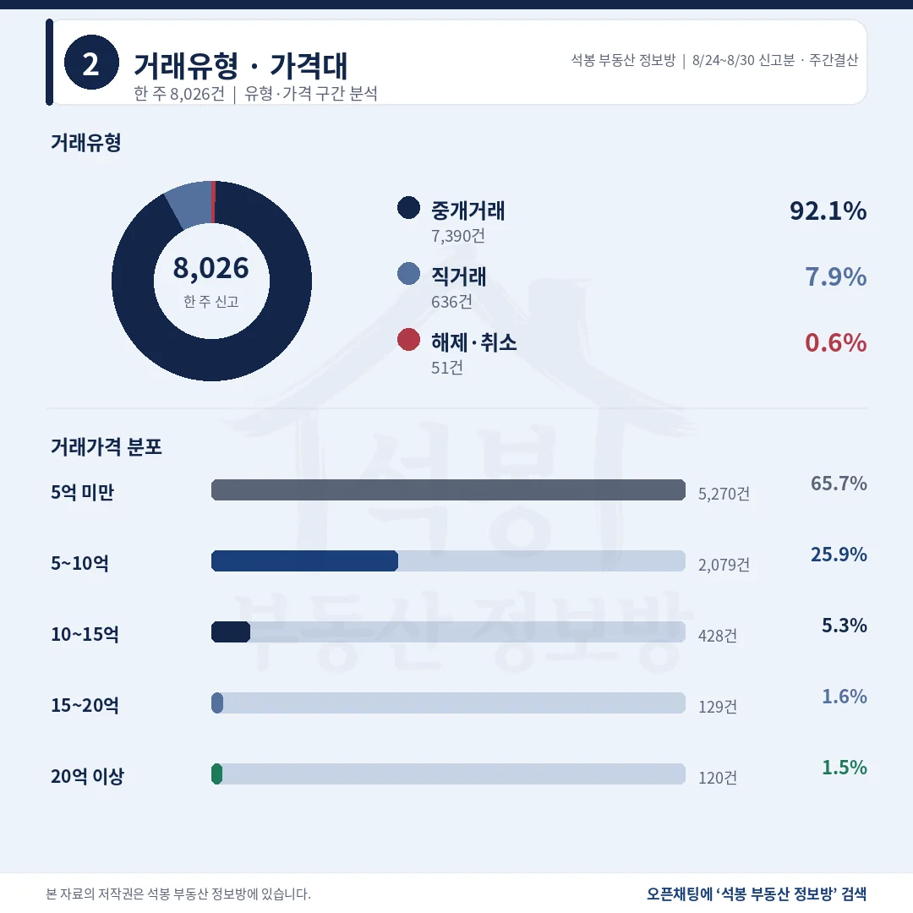
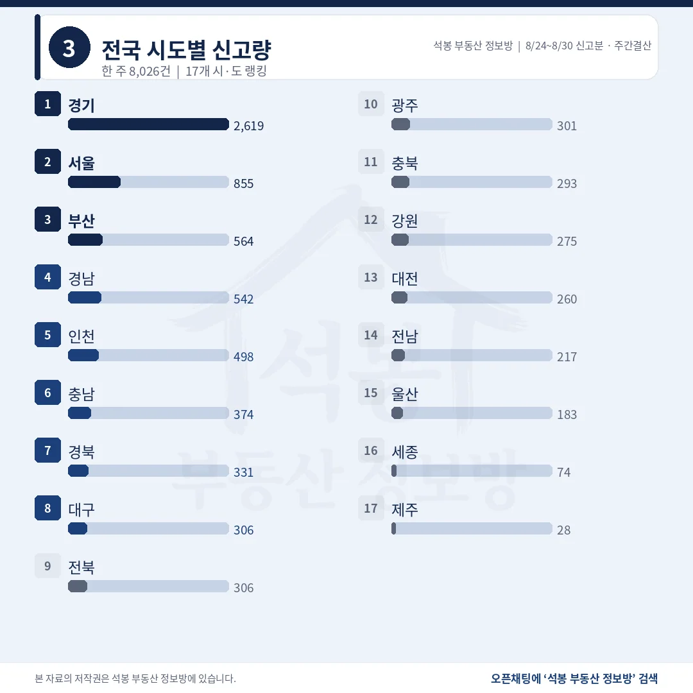
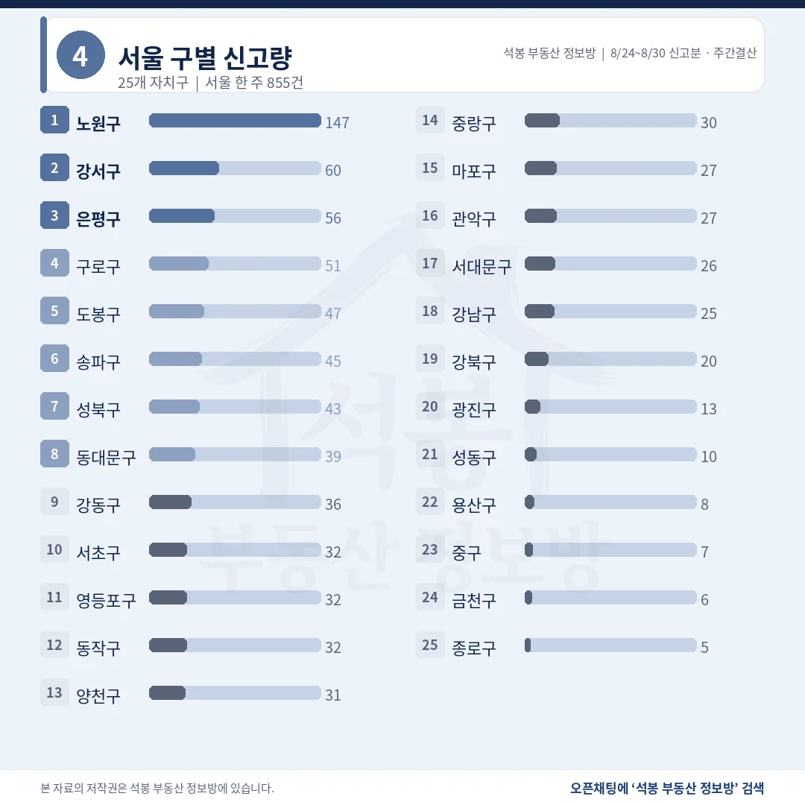
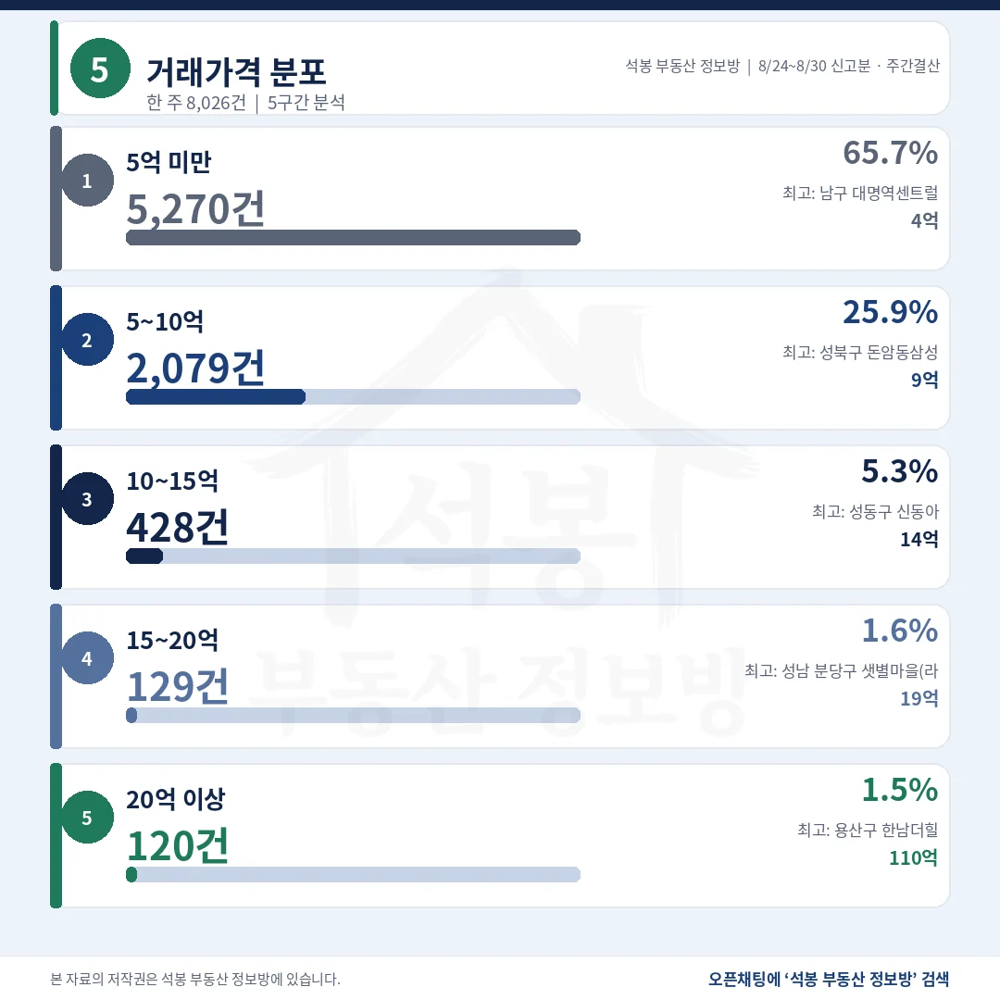
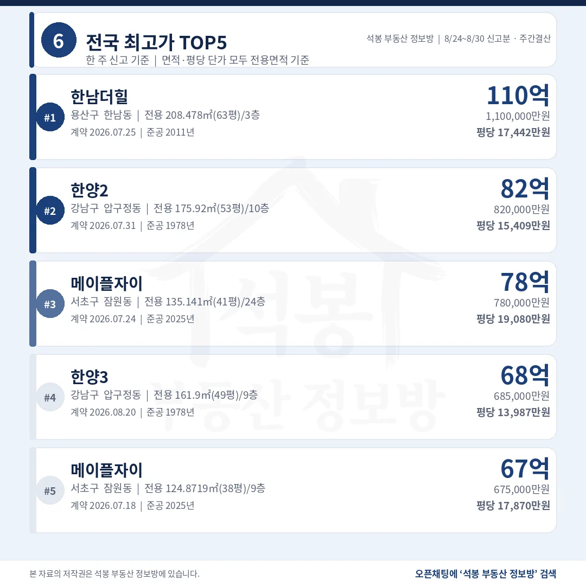
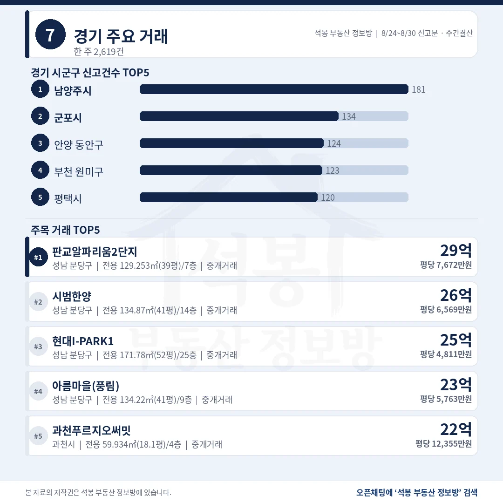
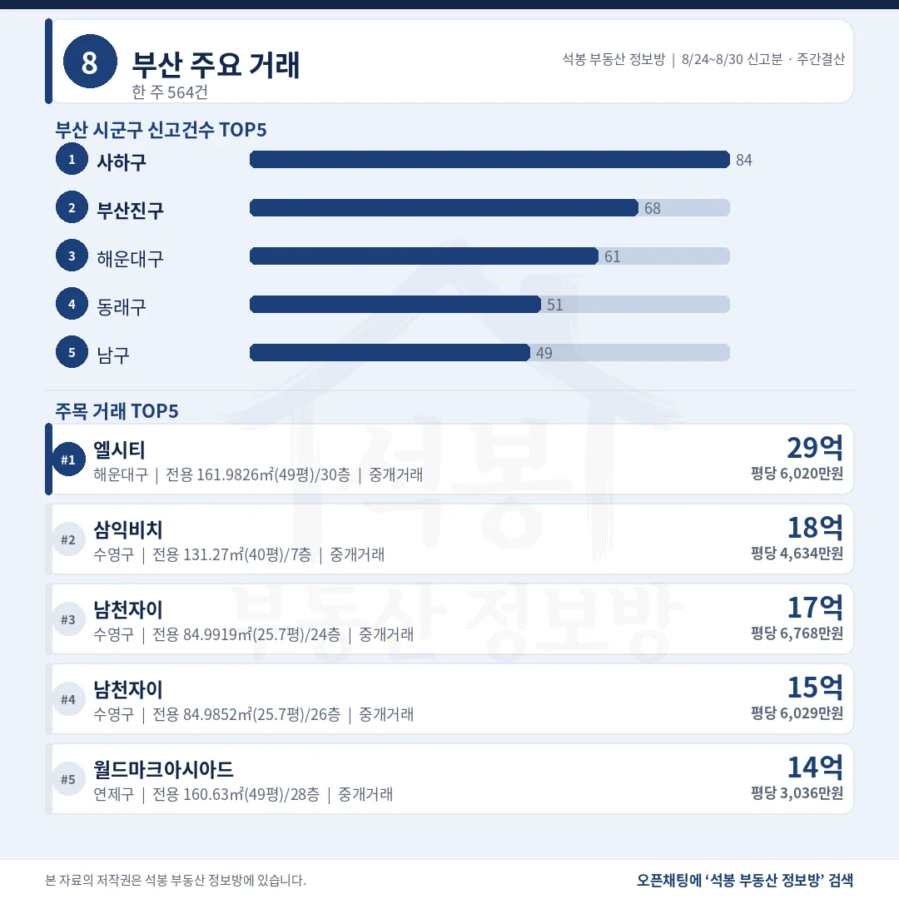
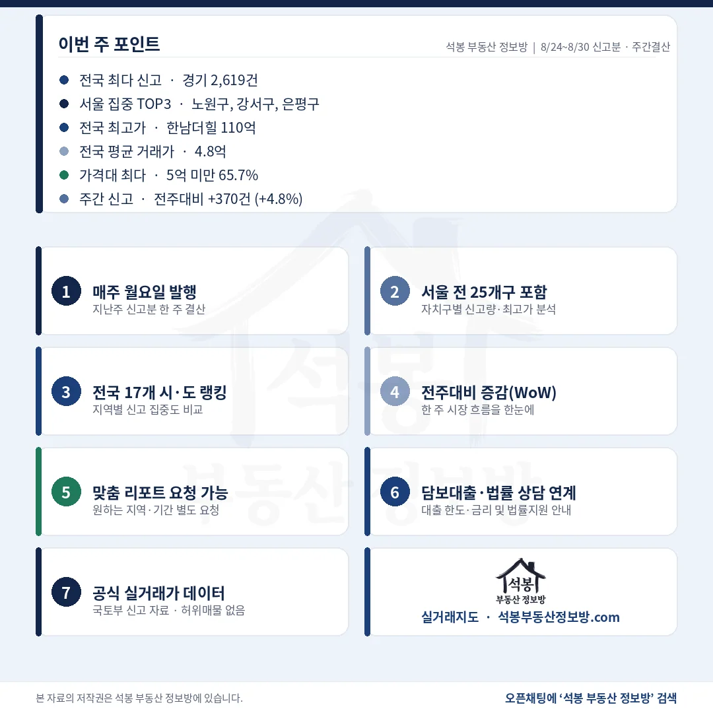

8월 24일부터 30일까지 전국 아파트 실거래 신고는 8,026건, 전주보다 370건 늘었습니다. 그런데 늘어난 몫이 서울이나 경기에서 나온 것이 아닙니다. 수도권은 오히려 20건 줄었고, 비수도권이 390건 늘어 증가분을 통째로 만들었습니다. 8월 24일~30일 결산은 그 방향을 따라가면서 보시면 됩니다.
단지명을 누르면 그 단지의 실거래 내역과 시세를 바로 볼 수 있습니다. (면적과 평당 단가는 모두 전용면적 기준)
중개 92.1%, 5억 아래가 5,270건 65.7%

거래유형·가격대
10건 중 6.6건이 5억 아래고, 20억 위는 120건으로 1.5%입니다.
거래유형
건수
비중
중개거래
7,390건
92.1%
직거래
636건
7.9%
해제·취소
51건
0.6%
가격대
건수
비중
구간 최고 거래
5억 미만
5,270건
65.7%
대구 남구 대명역센트럴엘리프 4.99억
5~10억
2,079건
25.9%
성북 돈암동삼성 9.98억
10~15억
428건
5.3%
성동 행당동 신동아 14.97억
15~20억
129건
1.6%
분당 샛별마을(라이프) 19.9억
20억 이상
120건
1.5%
용산 한남동 한남더힐 110억
전국 중위 거래가는 3.65억, 평균은 4.82억입니다. 직거래 636건 가운데 89건이 뒤에 나올 부산 사하구와 부천 원미구 두 단지에 몰려 있습니다.
여기서부터는 회원에게 보여드립니다
카카오 로그인 3초면 전문을 읽을 수 있습니다. 무료입니다.
가입하시면 지역 시장조사 보고서(약식)를 2회 무료로 요청하실 수 있습니다.
이미 회원이면 같은 버튼으로 로그인만 됩니다
수도권 49.5%, 늘어난 390건이 전부 비수도권입니다

전국 시도별 신고량
서울과 경기가 나란히 줄었는데 전국 합계는 늘었습니다. 이런 주가 드뭅니다.
시도
신고
중위 거래가
전주비
비고
경기
2,619건
4.95억
-1.5%
원미구 27건은 공공기관 하루 매입
서울
855건
9.10억
-4.3%
쏠림 없음
부산
564건
3.45억
+28.2%
법인 46건 제외 시 518건 · +17.7%
경남
542건
2.15억
+22.9%
쏠림 없음
인천
498건
3.79억
+13.2%
쏠림 없음
충남
374건
2.00억
+18.4%
아산 배방읍 직거래 16건 포함
경북
331건
1.71억
-4.3%
쏠림 없음
광주
301건
2.79억
+22.4%
쏠림 없음
강원도 275건으로 28.5% 늘었고, 줄어든 곳은 전북(-10.8%)과 전남(-12.9%), 서울, 경기, 경북뿐입니다. 수도권 비중은 8월 17일~23일 52.1%에서 49.5%로 내려왔습니다.
서울 855건, 25개 자치구 어디에도 쏠린 단지가 없습니다

서울 구별 신고량
최다 단지가 6건입니다. 지난 두 주 서울을 흔들던 일괄 신고가 이번에는 없습니다.
자치구
신고
중위 거래가
최다 단지 · 비고
노원구
147건
6.50억
상계동 상계주공7(고층) 6건(4.1%) · 여섯 날짜
강서구
60건
8.53억
가양동 강변 4건(6.7%)
은평구
56건
9.19억
응암동 녹번역e편한세상캐슬 6건(10.7%) · 여섯 날짜
구로구
51건
7.70억
구로동 신도림태영타운 4건
도봉구
47건
5.45억
쌍문동 삼익세라믹 5건
송파구
45건
21.00억
잠실동 주공아파트 5단지 4건
성북구
43건
10.00억
길음동 동부센트레빌 3건
동대문구
39건
10.90억
전농동 래미안크레시티 3건
단지 쏠림을 보는 기준은 한 단지가 그 자치구의 20%를 넘거나 50건 이상인 경우인데, 서울에서 가장 높은 은평구 녹번역e편한세상캐슬도 10.7%에 그쳤습니다. 건수 1위 노원구(6.50억)와 중위 1위 송파구(21.00억)는 3.2배 벌어집니다.
한남더힐 110억, 뒤이은 다섯 중 셋이 압구정동입니다

거래가격 분포

전국 최고가 TOP5
1978년에 지은 집이 2025년 신축보다 총액에서 앞섭니다.
단지
위치
거래가
전용면적
평당(전용) 준공
1 한남더힐
용산 한남동
110억
208.48㎡ (63.1평)
17,442만 2011년
2 한양2
강남 압구정동
82억
175.92㎡ (53.2평)
15,409만 1978년
3 메이플자이
서초 잠원동
78억
135.14㎡ (40.9평)
19,080만 2025년
4 한양3
강남 압구정동
68.5억
161.90㎡ (49.0평)
13,987만 1978년
5 메이플자이
서초 잠원동
67.5억
124.87㎡ (37.8평)
17,870만 2025년
6위도 압구정동 신현대9차 66.5억이라 상위 여섯 중 셋이 압구정동입니다. 20억을 넘긴 120건은 서울이 104건으로 86.7%, 그중 송파 24건, 서초 21건, 강남 17건 순입니다. 경기는 14건, 나머지는 대전과 부산 한 건씩입니다.
사하구 84건 가운데 46건이 8월 21일 하루에 몰렸습니다

경기 주요 거래

부산 주요 거래
부산 1위와 경기 4위가 둘 다 한 단지의 일괄 신고로 만들어졌습니다.
지역
신고
중위 거래가
최다 단지 · 비고
경기 남양주시
181건
4.85억
덕소아이파크 4건 · 쏠림 없음
경기 군포시
134건
4.40억
금정동 충무주공(872) 12건 · 여덟 날짜
경기 안양 동안구
124건
7.79억
관양동 공작아파트 8건
경기 부천 원미구
123건
4.85억
역곡신세계드림 27건(22.0%) 제외 시 96건 · 중위 5.66억
부산 사하구
84건
1.40억
대운스카이뷰1차 46건(54.8%) 제외 시 38건 · 중위 2.50억
부산 부산진구
68건
3.97억
전포동 서면아이파크1단지 4건
부산 해운대구
61건
4.63억
우동 경남마리나 3건
부산 사하구 대운스카이뷰1차 46건은 8월 21일 하루, 전용 24.4~28.1㎡(7.4~8.5평) 소형을 층별로 1.28억~1.40억에 사들인 법인 직거래입니다. 부천 역곡신세계드림 27건도 8월 27일 하루에 공공기관이 4.50억~5.07억으로 사들인 물량이라, 두 지역 중위값은 시세로 읽지 않는 편이 안전합니다.
강남3구는 92건에서 102건, 중위는 27.70억에서 21.90억

주간 포인트
구분
8/17~8/23 신고분
8/24~8/30 신고분
증감
전국 신고
7,656건
8,026건
+370건 (+4.8%)
수도권 신고
3,992건
3,972건
-20건
비수도권 신고
3,664건
4,054건
+390건
20억 이상
122건
120건
-2건
강남3구 신고
92건
102건
+10건
강남3구 중위
27.70억
21.90억
-5.80억
전국 신고가 370건 늘었는데 수도권은 20건 줄었습니다. 증가분 390건은 부산 124건, 경남 101건, 강원 61건, 충남 58건처럼 지방에서 쪼개져 나왔습니다. 다만 부산 증가분의 37.1%인 46건이 법인 하나가 하루에 사들인 소형 물건이라, 부산만 놓고 보면 실제 증가는 78건입니다. 그 46건을 빼도 비수도권 증가 344건은 여전히 수도권 감소분을 덮고 남습니다.
고가 시장은 반대로 움직였습니다. 강남3구 신고는 92건에서 102건으로 늘었는데, 중위 거래가는 27.70억에서 21.90억으로 5.80억 내려왔습니다.
8월 17일~23일 원고에서 짚어 드렸던 것처럼 거래가 얇아지면 값이 큰 거래만 남아 중위값이 올라갑니다. 8월 24일~30일에는 거래가 늘면서 그 효과가 풀린 것으로 보입니다. 20억을 넘긴 거래 자체는 122건에서 120건으로 거의 같으니, 건수와 중위값이 함께 움직이지 않는 주에는 어느 쪽도 시세 방향으로 옮겨 읽지 않는 편이 안전합니다.
표 보는 법 · 직거래는 중개사를 끼지 않고 당사자끼리 한 거래입니다. 면적과 평당 단가는 모두 전용면적 기준이고, 평은 ㎡를 3.3058로 나눈 값입니다. 중위 거래가는 금액순으로 줄 세웠을 때 한가운데 값이며, 중위·평균은 해제·취소분을 빼고 계산했습니다. 건수와 비중은 카드와 같은 전체 신고 기준입니다. 8월 24일과 30일은 원본이 갱신되지 않아 신고가 거의 없었고 전주도 같은 형태여서, 주 단위 비교는 그대로 유효합니다.
원자료: 국토교통부 실거래가 공개시스템 (2026년 8월 24일~30일 신고분 기준, 전국 아파트 매매 8,026건) · 집계 기준일 2026-08-31 · 편집·제작: 석봉 부동산 정보방 · 신고분은 계약일과 신고일이 다를 수 있고 해제·취소가 뒤늦게 반영될 수 있습니다 · 전주(8월 17일~23일 신고분 7,656건)와는 같은 수집 범위라 그대로 비교했습니다 · 본 자료는 정보 제공 목적이며 투자 권유가 아닙니다.